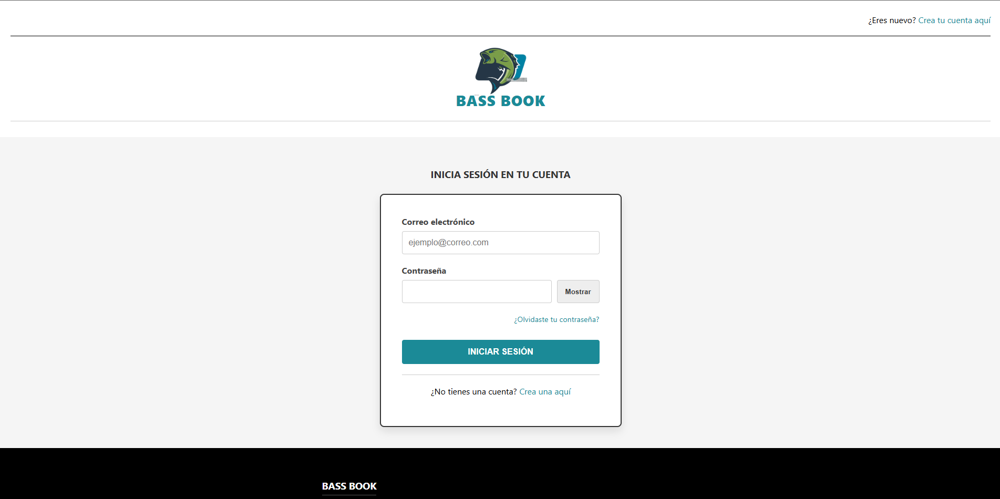
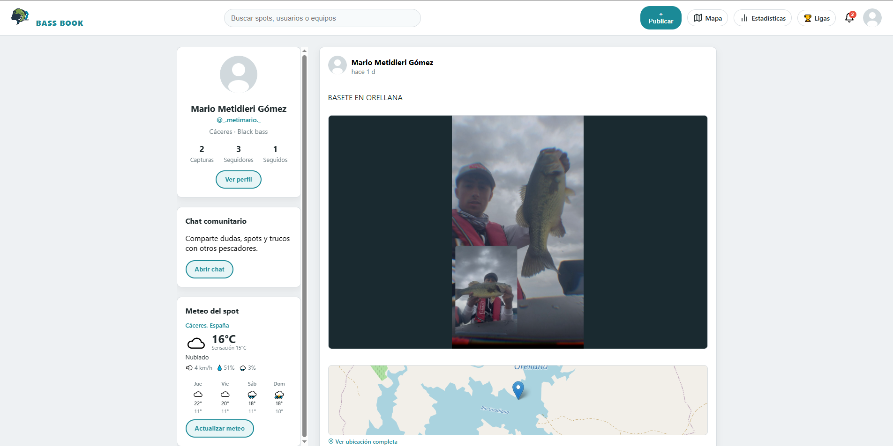
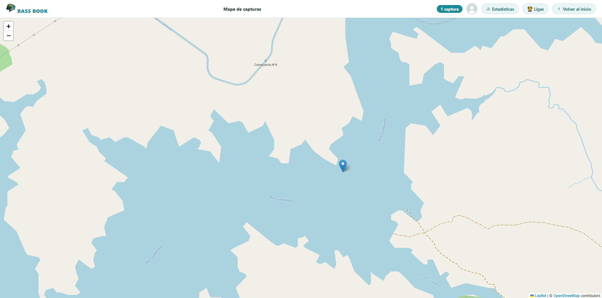

BASS BOOK
Red social de pesca deportiva — Trabajo de Fin de Grado DAW
Red social de pesca deportiva — Trabajo de Fin de Grado DAW
BASS BOOK es una red social temática desarrollada como Trabajo de Fin de Grado del Ciclo Superior de Desarrollo de Aplicaciones Web. Está orientada a pescadores deportivos de Extremadura y busca centralizar en una sola plataforma todo lo que un pescador necesita: compartir capturas, conectar con otros aficionados, descubrir nuevos spots y competir en ligas privadas.
El proyecto parte de un problema real: los pescadores utilizan grupos de WhatsApp y foros genéricos para compartir capturas, lo que dificulta organizar la información y encontrar spots concretos. BASS BOOK resuelve esto con un feed social propio, un mapa interactivo con geolocalización de capturas y un sistema de ligas privadas con clasificación automática.
La arquitectura sigue el patrón MVC sobre PHP 8 con acceso a datos a través de PDO y una REST API propia consumida desde el frontend en JavaScript Vanilla. La base de datos MySQL consta de 14 tablas relacionadas que cubren usuarios, capturas, ligas, chats, notificaciones y estadísticas.
Año: 2025 | Rol: Desarrollo completo (full-stack) | Contexto: TFG — Ciclo DAW


El mayor reto técnico fue el chat en tiempo real sin WebSockets: la solución fue un sistema de polling cada dos segundos que consulta la API en busca de mensajes nuevos, minimizando la carga del servidor con consultas indexadas y devolviendo solo los mensajes posteriores al último ID recibido.
Otro desafío fue el diseño de la base de datos para soportar las ligas privadas: una liga puede tener múltiples rondas, cada ronda tiene sus propias capturas puntuables y el sistema debe recalcular la clasificación de forma eficiente al añadir cada nueva captura. Se resolvió con una estructura de tres tablas relacionadas (liga, ronda, captura_liga) y vistas calculadas en MySQL.
